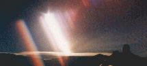
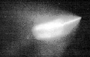
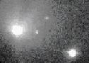
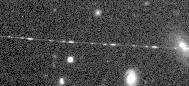
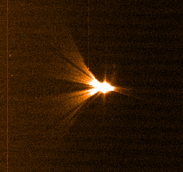

Being an astronomer, one of the most frequently question I am asked is "Do you believe in UFOs?" or some variation around that theme. The short answer is YES, I do. I do believe in "Unidentified Flying Objects". BUT I do my best to identify them, and once I have the identification, they are not UFOs anymore. That is the main difference with fanatic "UFOlogists", who will refuse any explanation that goes against a alien origin of the UFO.
The next question is usually "have you seen any UFO?" Again, yes. Spending many night outside, watching the sky, it is almost unavoidable. I even took pictures of some of them. Untill now, I always found an non-alien explanation. Here is a sample of my collection, it should be growing when I have time to scan them.
|  | Huge ``UFO'' taking off behind the La Silla Observatory. |
|  | A Russian UFO flies over Chile. |
|  | Not mine, but many people have heard about it: Strange Saturn-shaped spacecraft orbiting around Comet Hale-Bopp. |
|  | Flashing object crosses the field of a galaxy cluster, pictured by Richard J. Wainscott. Richard identified this object as one of the GOES geo-stationary meteorology satellites. |
|  | a really, really strange pointy star, with the 3.6m NTT at la Silla |
Fri Dec 6 17:12:02 1996
{kind=link}